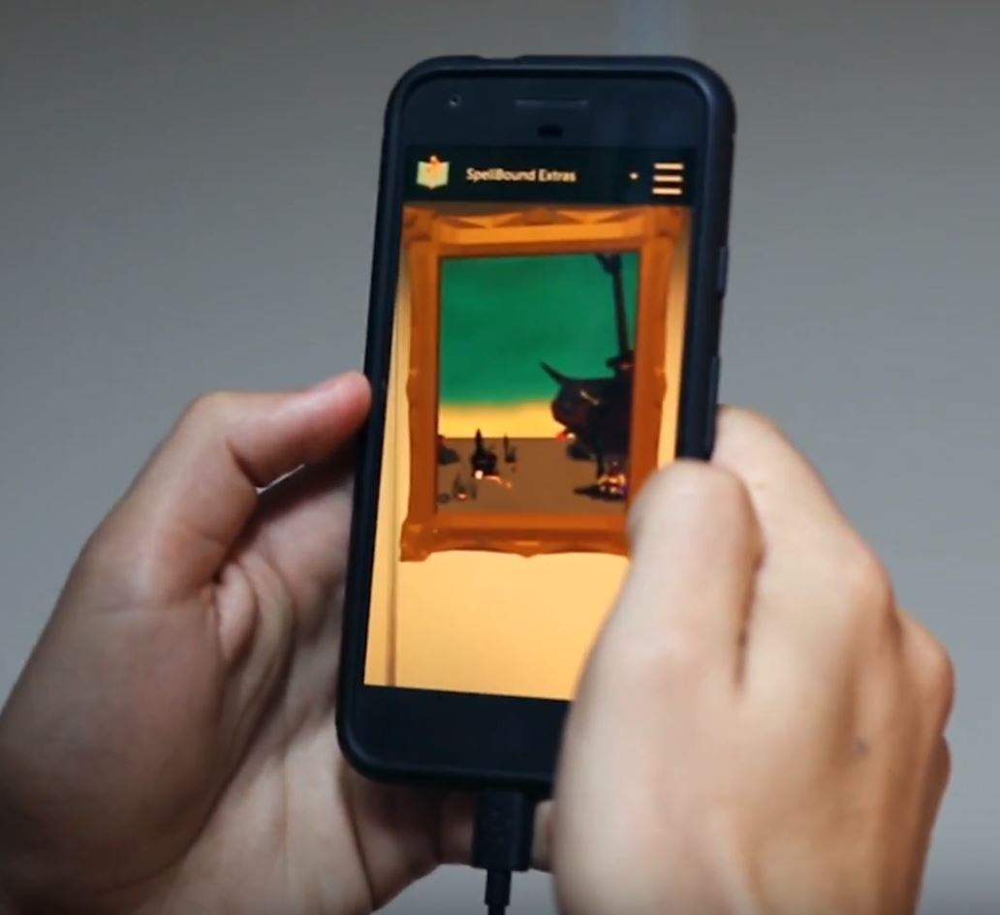
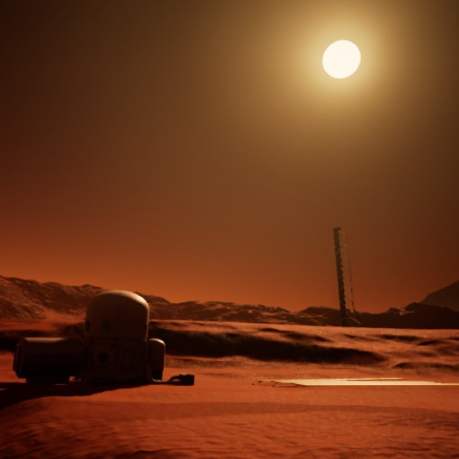
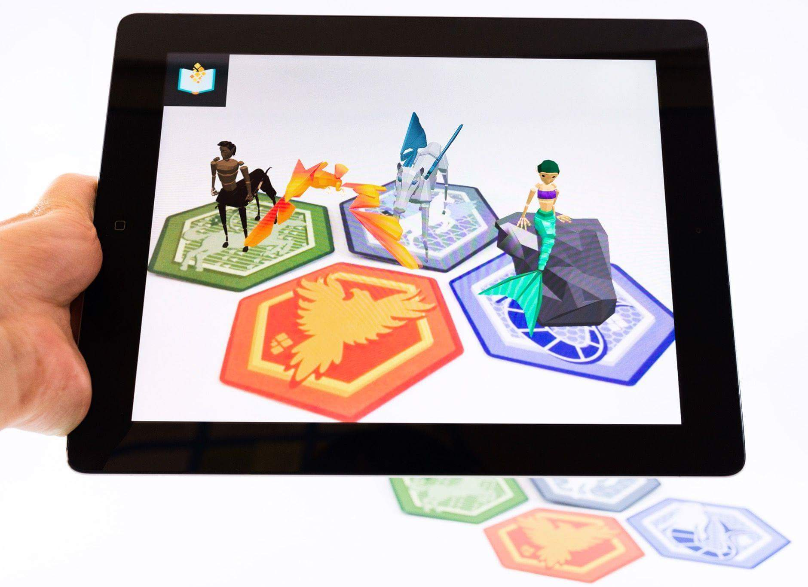
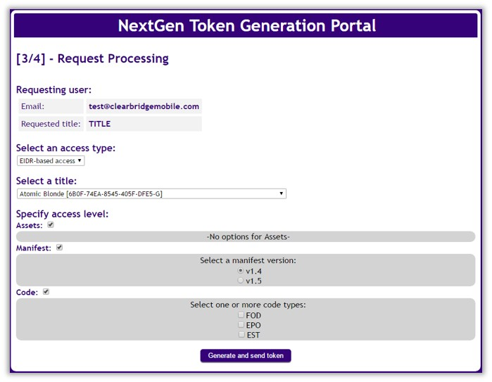
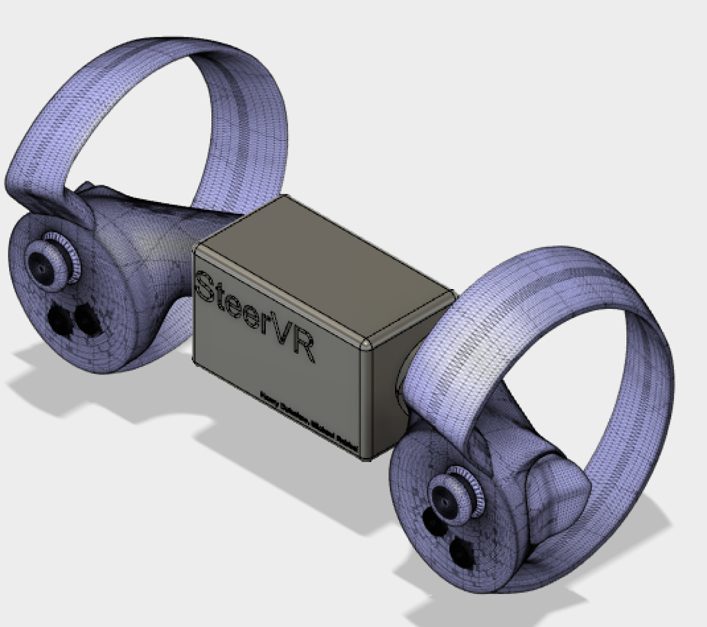
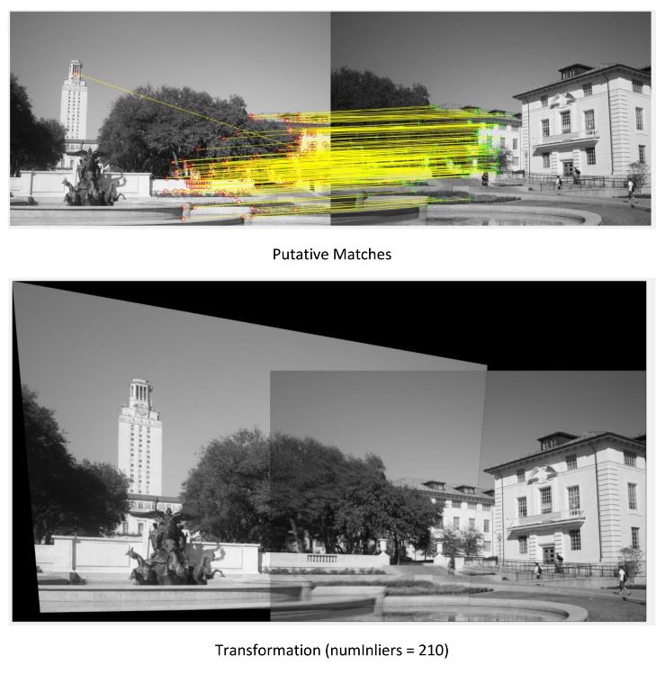

SpellBound: Magic Portal
| Technologies: |
Unity C# |
Setting: | Professional |
| Timeframe: | 2 mos. | Team: | 2 |
A multi-target AR experience that scales to address obstacles on hospital walls. When all targets are recognized, a frame opens up to present an interactive scene. I designed and prototyped this experience, which is currently under review for a utility patent!

SEDS Mars Experience

| Technologies: |
Unreal Engine 3DS Max |
Setting: | Professional |
| Timeframe: | 2 mos. | Team: | 5 |
I worked with a space-centric student organization to prototype a Mars VR experience for them to use as an educational demo in K-12 schools. The simulation takes place on the surface of mars, where users must follow environmental clues to track down a missing rover. This project was selected by my instructor to be presented in front of a panel of local entrepreneurs. Video demo here.
SpellBound: MythCards
| Technologies: |
Unity C# |
Setting: | Professional |
| Timeframe: | 4 mos. | Team: | 3 |
A set of AR trading cards featuring mythological creatures. They're primarily used by child life specialists in pediatric hospitals as therapeutic distraction tools. I prototyped the cards initially, then worked with the company's 3D modeler and sound designer to implement them for release.

NBCUniversal: Token Manager

| Technologies: |
JavaScript HTML/CSS AWS Akamai |
Setting: | Professional |
| Timeframe: | 2 mos. | Team: | N/A |
This tool is a web application that centralizes the distribution and storage of security tokens. After gathering requirements across a few internal teams, I presented designs to my managers and, with their approval, built the site from scratch. To function, it collects data across APIs for the company's storage system, EIDR.org, and SmartSheet.
SteerVR
| Technologies: |
Unreal Engine AutoCAD |
Setting: | ENTR 390: VR Prototyping |
| Timeframe: | 3 wks. | Team: | 2 |
For a sprint design project, my partner and I designed a phyiscal mount for Oculus Touch controllers that simulated holding a steering wheel. To accompany his 3D-printed model, I created a first-person driving simulator in UE4.

Level One

| Technologies: | GameMaker | Setting: | ENGR 100: Gaming for the Greater Good |
| Timeframe: | 3 mos. | Team: | 4 |
Level One is a computer game designed to help children with Autism Spectrum Disorder (ASD). It addresses a potential hostility towards variance in their surroundings by presenting a static level structure with different mechanics between levels. Some examples include shuffling the control scheme, inverting the function of in-game switches, and requiring players to continuously move their avatar.
Panoramic Image Stitching
| Technologies: |
MATLAB RANSAC SIFT descriptors |
Setting: | EECS 442: Computer Vision |
| Timeframe: | 3 wks. | Team: | 1 |
For this course project, I used a RANSAC implementation to stitch multiple images taken from the same perspective into a unified panorama. I determined relative image positions by first calculating SIFT feature descriptors of each image, comparing them to find matches, then optimizing the homography (transform) between them.
